path2data <- paste0(
"/Users/nguyenpnt/Library/CloudStorage/OneDrive-OxfordUniversityClinicalResearchUnit/Data/HFMD/cleaned/"
)
# Name of cleaned HFMD data file
cases_file <- "hfmd_hcdc.rds"
df_cases <- paste0(path2data, cases_file) |>
readRDS()5 Forecasting model
5.1 Data path
5.2 Library
Required packages:
required <- c("BART",
"tidyverse",
"forecast",
"MASS",
"magrittr",
"parallel",
"lubridate",
"tseries",
"EpiEstim",
"tseries",
"janitor")Installing those that are not installed yet:
to_install <- required[!required %in% installed.packages()[, "Package"]]
if (length(to_install))
install.packages(to_install)Loading the packages for interactive use:
invisible(sapply(required, library, character.only = TRUE))5.3 Constant
Core for parralel analysis:
cores <- detectCores() - 15.4 Functions
Function to run bart model for 1-4 weeks ahead
Code
test_bart_1t4w <- function(w, hfmd_data,y,lambda,week_ahead){
# hfmd_data <- hfmd_1324
# y = 2023
# w = 39
# week_ahead = 4
train_data <- hfmd_data |>
filter(year < y | (year == y & week <= w)) |>
data.frame() |>
na.omit()
test_data <- hfmd_data |>
filter(year == y & week %in% (w + 1):(w + week_ahead)) |>
data.frame()
lag_cols <- paste0("lag_t.", 1:week_ahead)
model <- wbart(
x.train = train_data[, c("adm_week", lag_cols)],
y.train = train_data$y_transformed,
# x.test = test_data[, c("adm_week", "lag_t.1", "lag_t.2")],
ntree = 1000,
ndpost = 10000,
nskip = 1000,
a = 0.95,
b = 2
)
pred_draws <- predict(model,test_data[, c("adm_week",lag_cols)])
pred_ori <- InvBoxCox(pred_draws,lambda)
result <- test_data |>
mutate(
pred_t = colMeans(pred_ori),
y_lower95 = apply(pred_ori, 2, quantile, 0.025),
y_upper95 = apply(pred_ori, 2, quantile, 0.975),
y_lower80 = apply(pred_ori, 2, quantile, 0.10),
y_upper80 = apply(pred_ori, 2, quantile, 0.90),
week_run = w,
year_run = y,
week_ahead = week_ahead
)
result
}Plot BART for 1 to 4 weeks function
Code
bart_1t4w_p <- function(data,w_a,week_interval){
# data = bart_1t4w
# w_a = 1
# week_interval = c(14,26)
df_p <- data |>
filter(week_ahead == as.integer(w_a) &
week_run %in% c(week_interval[1]:week_interval[2]))
df_r <- data |>
dplyr::select(adm_week, n) |>
unique()
df_l <- df_p |>
group_by(year_run,week_run) |>
slice(1)
df_p |>
ggplot(aes(x = adm_week)) +
geom_line(aes(y = pred_t)) +
geom_ribbon(
aes(ymin = y_lower95, ymax = y_upper95),
fill = "#4A90D9",
alpha = 0.15,
na.rm = TRUE
) +
geom_ribbon(
aes(ymin = y_lower80, ymax = y_upper80),
fill = "#4A90D9",
alpha = 0.25,
na.rm = TRUE
) +
geom_point(data = df_r,
aes(x = adm_week, y = n),
alpha = 0.5,
size = 0.3) +
geom_vline(
data = df_l,
aes(xintercept = adm_week),
linetype = 3
)+
theme_bw() +
labs(y = "Number of cases", x = "Admission week")+
facet_wrap( ~ week_run, ncol = 4)
} Function for run BART-4week and R(t)
Code
bart_4w <- function(w, hfmd_data,y,lambda,week_ahead){
# hfmd_data <- hfmd_1324
# y = 2023
# w = 39
# week_ahead = 4
train_data <- hfmd_data |>
filter(year < y | (year == y & week <= w)) |>
data.frame() |>
na.omit()
test_data <- hfmd_data |>
filter(year == y & week %in% (w + 1):(w + week_ahead)) |>
data.frame()
lag_cols <- paste0("lag_t.", 1:week_ahead)
model <- wbart(
x.train = train_data[, c("adm_week", lag_cols)],
y.train = train_data$y_transformed,
# x.test = test_data[, c("adm_week", "lag_t.1", "lag_t.2")],
ntree = 1000,
ndpost = 10000,
nskip = 1000,
a = 0.95,
b = 2
)
pred_draws <- predict(model,test_data[, c("adm_week",lag_cols)])
pred_ori <- InvBoxCox(pred_draws,lambda)
future <- test_data |>
mutate(
pred_t = colMeans(pred_ori),
y_lower95 = apply(pred_ori, 2, quantile, 0.025),
y_upper95 = apply(pred_ori, 2, quantile, 0.975),
y_lower80 = apply(pred_ori, 2, quantile, 0.10),
y_upper80 = apply(pred_ori, 2, quantile, 0.90),
week_run = w,
year_run = y,
week_ahead = week_ahead
)
## r(t) estimation
r.t <- estimate_R(
incid = train_data$n,
# dt = 7,
# recon_opt = "match",
method = "parametric_si",
config = make_config(list(mean_si = 3.7,
std_si = 2.6))
)
past <- train_data %>%
mutate(r_t.time = 1:nrow(.),
train = InvBoxCox(model$yhat.train.mean,lambda),
week_run = w, # add these
year_run = y) %>%
left_join(clean_names(r.t$R), by = join_by(r_t.time == t_end)) |>
filter(year >= 2022)
result <- list()
result$past <- past
result$future <- future
return(result)
}Function for plotting BART-4week and R(t)
Code
plot_bart4w <- function(data, week_interval){
# data = bart_4w_rt
# week_interval = c(14,26)
results_past <- data |> lapply(\(x) x$past) |> bind_rows(.id = "id")
results_future <- data |> lapply(\(x) x$future) |> bind_rows()
scale_rt <- 1000
results_future_p <- results_future |>
filter(week_run %in% c(week_interval[1]:week_interval[2]))
results_past_p <- results_past |>
filter(
week_run %in% c(week_interval[1]:week_interval[2]) &
year_run %in% range(results_past$year)
)
results_past_p |>
ggplot(aes(x = adm_week)) +
## rt
geom_col(aes(y = n), alpha = .2) +
geom_line(aes(y = mean_r * scale_rt)) +
geom_ribbon(aes(y = mean_r * scale_rt,
ymin = quantile_0_025_r * scale_rt,
ymax = quantile_0_975_r * scale_rt),
fill = "red", alpha = 0.2) +
scale_y_continuous(
name = "Number of cases",
sec.axis = sec_axis(trans = ~ . / scale_rt, name = "R(t)")
) +
scale_x_date(
limits = c(max(results_future_p$adm_week) - weeks(26),
max(results_future_p$adm_week)),
date_labels = "%b %Y",
date_breaks = "2 months"
) +
## future predictions
geom_point(
data = results_future_p ,
aes(x = adm_week, y = n)
) +
geom_line(
data = results_future_p,
aes(x = adm_week, y = pred_t)
) +
geom_ribbon(
data = results_future_p,
aes(ymin = y_lower95, ymax = y_upper95),
fill = "#4A90D9", alpha = 0.15, na.rm = TRUE
) +
geom_ribbon(
data = results_future_p,
aes(ymin = y_lower80, ymax = y_upper80),
fill = "#4A90D9", alpha = 0.25, na.rm = TRUE
) +
## vertical line at forecast start per facet
geom_vline(
data = results_future_p |>
group_by(year_run, week_run) |>
slice(1),
aes(xintercept = adm_week),
linetype = 3
) +
coord_cartesian(ylim = c(0,4000))+
geom_hline(yintercept = 1000, linetype = "dashed") +
labs(x = "Admission week") +
theme_bw() +
facet_wrap(~ week_run, ncol = 4)
}Model to run SARIMA
Code
run_arima_week <- function(w, y, hfmd_data, lambda, week_ahead) {
# i = 27
# w = year_week_grid$w[i]
# y = year_week_grid$y[i]
# hfmd_data = hfmd_1324
# lambda = lambda
# week_ahead = 4
# Expanding window training data
train_data <- hfmd_data |>
dplyr::filter(year < y | (year == y & week <= w)) |>
data.frame() |>
na.omit()
test_data <- hfmd_data |>
dplyr::filter(year == y & week %in% (w + 1):(w + week_ahead)) |>
data.frame()
# Convert training to time series object
ts_train <- ts(train_data$y_transformed, frequency = 52)
# Fit auto ARIMA with tryCatch
model <- auto.arima(ts_train)
# Fix 1: forecast exactly nrow(test_data) steps, not always 3
h <- nrow(test_data)
fc <- forecast(model, h = h, level = c(80, 95))
# Fix 2: safely back-transform with InvBoxCox instead of manual formula
# handles edge cases like lambda = 0 (log transform)
future <- test_data |>
mutate(
pred_t = as.numeric(InvBoxCox(fc$mean, lambda)),
y_lower95 = as.numeric(InvBoxCox(fc$lower[, "95%"], lambda)),
y_upper95 = as.numeric(InvBoxCox(fc$upper[, "95%"], lambda)),
y_lower80 = as.numeric(InvBoxCox(fc$lower[, "80%"], lambda)),
y_upper80 = as.numeric(InvBoxCox(fc$upper[, "80%"], lambda)),
week_run = w,
year_run = y
)
r.t <- estimate_R(
incid = train_data$n,
# dt = 7,
# recon_opt = "match",
method = "parametric_si",
config = make_config(list(mean_si = 3.7,
std_si = 2.6))
)
past <- train_data %>%
mutate(r_t.time = 1:nrow(.),
week_run = w,
year_run = y) %>%
left_join(clean_names(r.t$R), by = join_by(r_t.time == t_end)) |>
filter(year >= 2022)
result <- list()
result$past <- past
result$future <- future
return(result)
}5.5 Background
I aim to apply the model for HFMD forecasting in Ho Chi Minh City. Based on a paper on HFMD forecasting in China Link, I tried to do similar work with our data.
We can say with HCDC, after reviewing forecasting models, there are various approaches, including mechanistic, statistical, and machine learning models. However, for policymakers, they need estimates of uncertainty in forecasting accuracy, so there are three models that can provide this: ARIMA (SARIMA), Prophet, and Bayesian additive regression tree (BART).
In this document, I have tried two models, BART and SARIMA. For the detail of model please read the paper.
5.6 Analysis
hfmd_1324 <- df_cases %>%
mutate(adm_week = as.Date(floor_date(admission_date, "week"))) %>%
group_by(adm_week) %>%
dplyr::count() %>%
ungroup() %>%
mutate(
x = 1:nrow(.),
week = week(adm_week),
month = month(adm_week),
year = year(adm_week)
) %>%
rename(time = x)I applied Box-cox transformation to normalize the count data
bc <- boxcox(n ~ adm_week,data = hfmd_1324)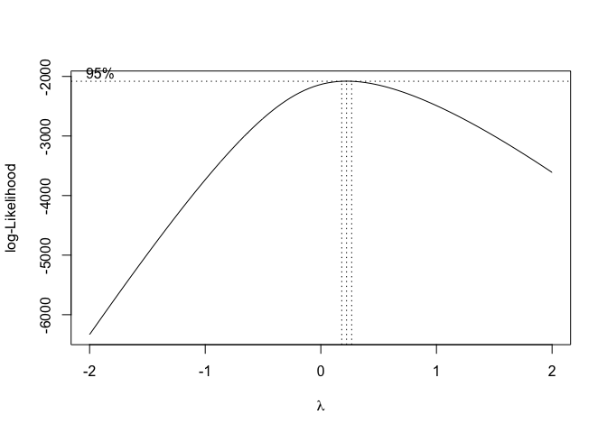
lambda <- bc$x[which.max(bc$y)]Add transformed cases and lag terms from 1-4 weeks
hfmd_1324 %<>%
mutate(
y_transformed = ((n^lambda - 1) / lambda),
lag_t.1 = lag(y_transformed,1),
lag_t.2 = lag(y_transformed,2),
lag_t.3 = lag(y_transformed,3),
lag_t.4 = lag(y_transformed,4)
)Before transform:
hfmd_1324 |>
ggplot(aes(n))+
geom_histogram(binwidth = 100)
After transform:
hfmd_1324 |>
ggplot(aes(y_transformed))+
geom_histogram(binwidth = .5)
5.7 BART model
First I ran BART model from 1 - 4 weeks forecasting ahead.
I used the data from 2013 - 2022 for training, and data from 2023 for testing.
I used the data from 2013 - 2023 for training, and data from first 6 months of 2024 for testing
For BART model with 1 week prediction ahead had 2 predictors: admission week, lag 1 week.
For BART model with 2 week prediction ahead had 3 predictors: admission week, lag 1 week, lag 2 week.
For BART model with 3 week prediction ahead had 4 predictors: admission week, lag 1 week, lag 2 week, lag 3 week
For BART model with 4 week prediction ahead had 5 predictors: admission week, lag 1 week, lag 2 week, lag 3 week, lag 4 week
# run_grid <- expand.grid(y = 2023, w = 1:52,week_ahead = 1:4)
#
# results_bart_1t4w <- mclapply(
# X = 1:nrow(run_grid),
# FUN = function(i) {
# test_bart_1t4w(
# w = run_grid$w[i],
# y = run_grid$y[i],
# week_ahead = run_grid$week_ahead[i],
# hfmd_data = hfmd_1324,
# lambda = lambda
# )
# },
# mc.cores = cores
# )
#
# bart_1t4w <- bind_rows(results_bart_1t4w)
# save(bart_1t4w,file = "./data/bart_1t4w.RData")
load("./data/bart_1t4w.RData")The performance of each week interval ahead, from 1-4. I used some criteria followed the paper:
\[ \begin{aligned} RMSE &= \sqrt{\frac{1}{n}\sum_{i=1}^{n}\left(y_{i} - y_{i}^{*}\right)^{2}} \\ MAPE &= \frac{100\%}{n}\sum_{i=1}^{n}\left|\frac{y_{i}^{*} - y_{i}}{y_{i}}\right| \\ \end{aligned} \]
For interval forecasting
\[ \begin{aligned} PICP &= \frac{1}{|\varepsilon|} \sum_{t \in \varepsilon} I\left(\zeta_{t} \leq y_{t} \leq \mu_{t}\right) \\ PINAW &= \frac{1}{|\varepsilon|\, R} \sum_{t \in \varepsilon}\left(\mu_{t} - \zeta_{t}\right) \\ CWC &= PINAW \left\{ 1 + I\left(PICP < \alpha\right) \exp\left[-\lambda\left(PICP - \alpha\right)\right] \right\} \end{aligned} \]
performance <- bart_1t4w |>
mutate(
cover = case_when(n <= y_upper95 & n >= y_lower95 ~ T, .default = F)
) |>
group_by(week_run,week_ahead) |>
summarise(
rmse = sqrt(mean((n - pred_t)^2, na.rm = TRUE)),
mae = mean(abs(n - pred_t), na.rm = TRUE),
mape = mean(abs((n - pred_t) / n), na.rm = TRUE) * 100,
picp = mean(cover),
pinaw = mean(y_upper95 - y_lower95) /(max(n) - min(n)),
penalty = ifelse(picp < .95,
exp(-1 * (picp - .95)),
1),
cwc = pinaw * penalty,
.groups = "drop"
) |>
dplyr::select(-c(penalty,picp)) |>
pivot_longer(cols = - c(week_run,week_ahead))performance |>
ggplot(aes(
x = week_run,
y = value,
group = week_ahead,
color = factor(week_ahead)
)) +
geom_line() +
facet_wrap(~factor(name,levels = c("rmse","mae","mape","cwc","pinaw")),scale = "free_y")+
theme_bw() +
labs(x = "Week forecasting")+
theme(legend.position = "bottom")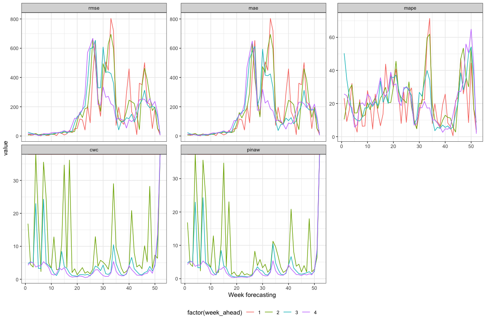
performance |>
ggplot(aes(x = week_ahead, y = value,group = week_ahead))+
geom_boxplot()+
facet_wrap(~factor(name,levels = c("rmse","mae","mape","cwc","pinaw")),scale = "free_y")+
theme_bw()+
labs(x = "Week ahead")+
theme(legend.position = "bottom")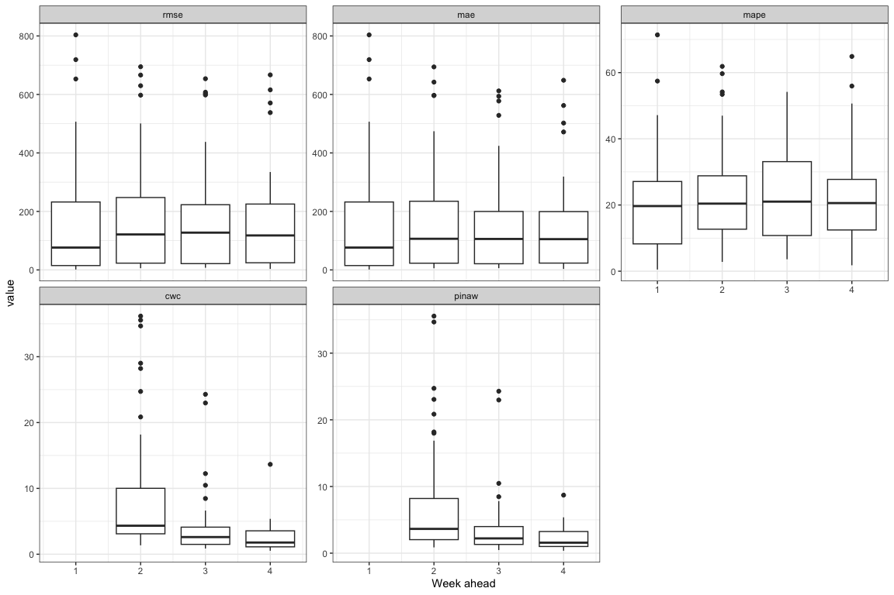
Note
As we can see the model with 4-week prediction ahead have best performance with low error and high coverage (low cwc and pinaw) during the peak of the outbreak. Because It used the 4 lags of predictors. So I prefer prediction for 4 weeks ahead
Prediction of 4 week head for 2023
bart_1t4w |>
bart_1t4w_p(w_a = 4, week_interval = c(1, 13))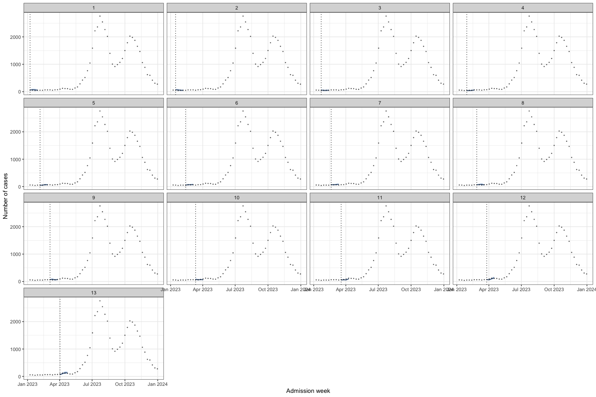
bart_1t4w |>
bart_1t4w_p(w_a = 4, week_interval = c(14, 26))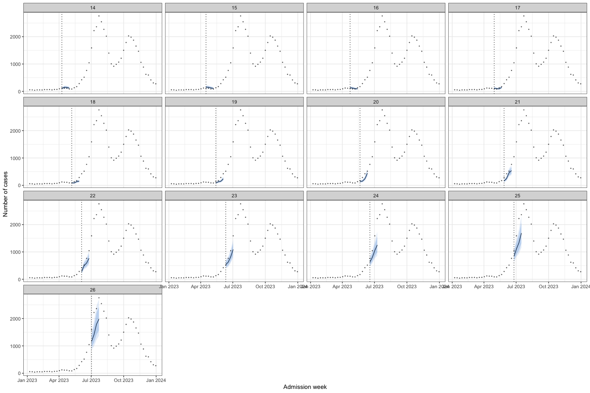
bart_1t4w |>
bart_1t4w_p(w_a = 4, week_interval = c(27, 40))
bart_1t4w |>
bart_1t4w_p(w_a = 4, week_interval = c(41, 52))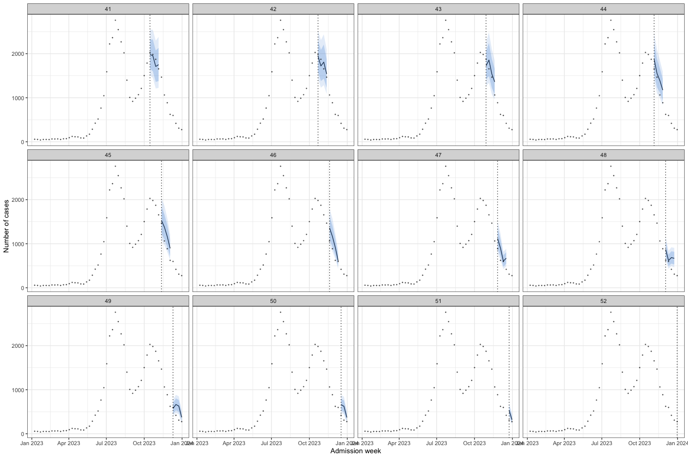
Then I try to combine the forecasting model with the R(t) for surveillance. For R(t), I used EpiEstim package, with SI assumed followed Gamma distribution with mean = 3.7 and sd = 2.6, followed this paper Link
# run_grid <- expand.grid(y = 2023, w = 1:52,week_ahead = 4)
#
# bart_4w_rt <- mclapply(
# X = 1:nrow(run_grid),
# FUN = function(i) {
# bart_4w(
# w = run_grid$w[i],
# y = run_grid$y[i],
# week_ahead = run_grid$week_ahead[i],
# hfmd_data = hfmd_1324,
# lambda = lambda
# )
# },
# mc.cores = cores
# )
# save(bart_4w_rt,file = "./data/bart_4w_rt.RData")
load("./data/bart_4w_rt.RData")bart_4w_rt |>
plot_bart4w(week_interval = c(1,13))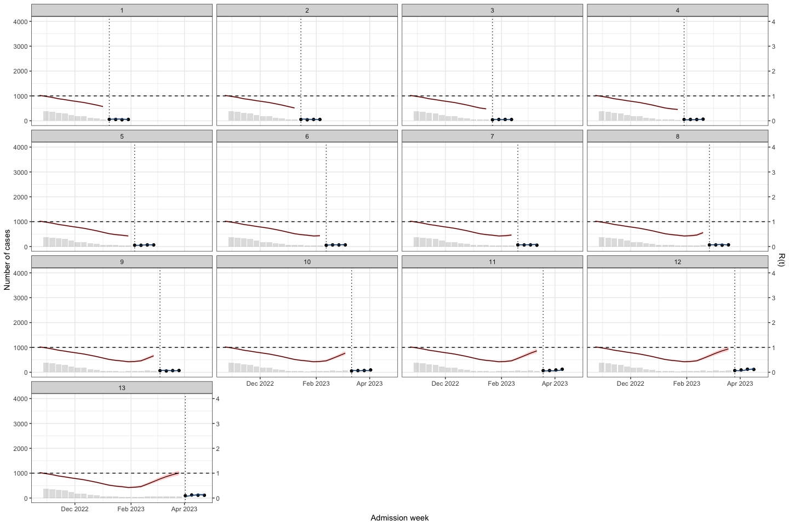
bart_4w_rt |>
plot_bart4w(week_interval = c(14,26))
bart_4w_rt |>
plot_bart4w(week_interval = c(27,40))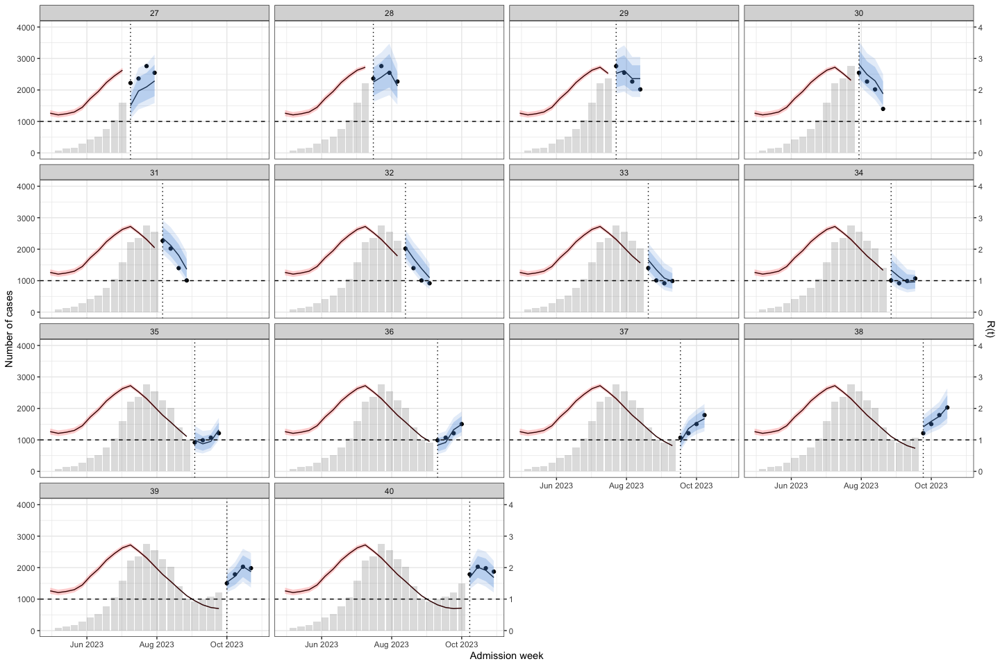
bart_4w_rt |>
plot_bart4w(week_interval = c(41,52))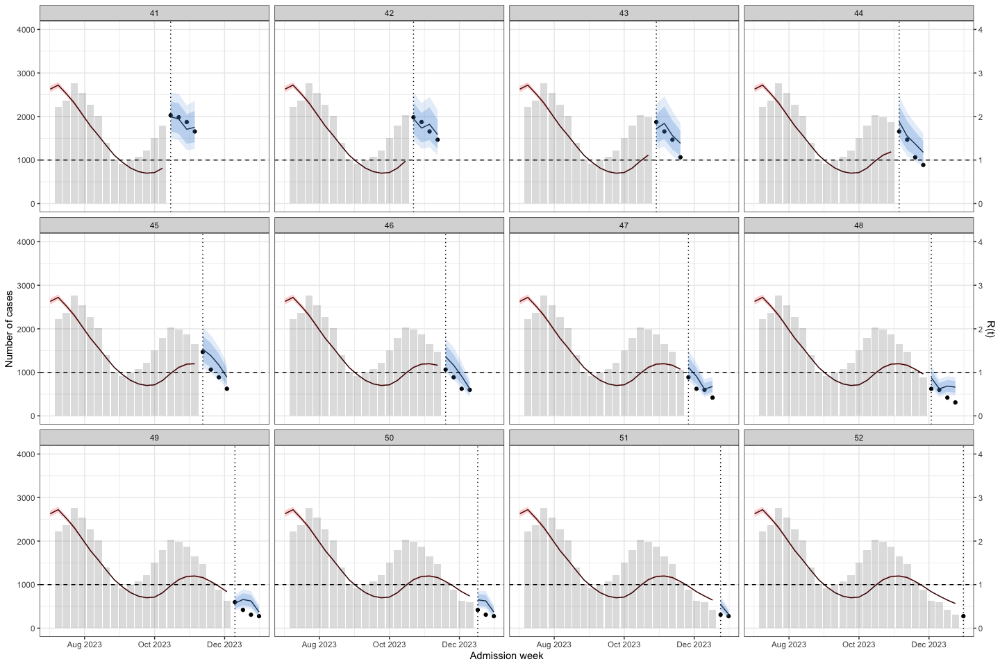
The horizontal dotted line separates the training (before) and prediction (after) periods at each week. This illustrates how the model can be applied to HFMD surveillance and prediction in real-world settings. When HCDC receives weekly reported case data, the model needs to be re-run at each time point to generate updated forecasts. A 4-week-ahead prediction horizon may be appropriate, as it allows for delays in weekly case reporting.
The histogram in the training part shows the reported cases. The line with the red confidence interval in the training part represents R(t).
The line with the 2 intervals is the model prediction with 95% and 80% prediction interval.
Note
The result show that at the early stage of the outbreak the R(t) was under 1. But in week 6-7, we can see the small increase in R(t) while there no sign from the prediction.
At week 22, R(t) was close to 1.5, and the model predicted an increase in cases.
However, at week 36, when the second wave was triggered, R(t) was < 1, but the model still predicted an increase in cases.
I conclude that R(t) may be helpful for surveillance when the time interval between two outbreaks is long. However, when two successive outbreaks occur close together, R(t) may be delayed; for example, at the second peak, when the outbreak was declining, R(t) increased to above 1.
Then I applied to predict for week 1-26 of 2024
# run_grid <- expand.grid(y = 2024,
# w = 1:26,
# week_ahead = 4)
#
# bart_4w_rt_24 <- mclapply(
# X = 1:nrow(run_grid),
# FUN = function(i) {
# bart_4w(
# w = run_grid$w[i],
# y = run_grid$y[i],
# week_ahead = run_grid$week_ahead[i],
# hfmd_data = hfmd_1324,
# lambda = lambda
# )
# },
# mc.cores = cores
# )
#
# save(bart_4w_rt_24, file = "./data/bart_4w_rt_24.RData")
load("./data/bart_4w_rt_24.RData")bart_4w_rt_24 |>
plot_bart4w(week_interval = c(1,13))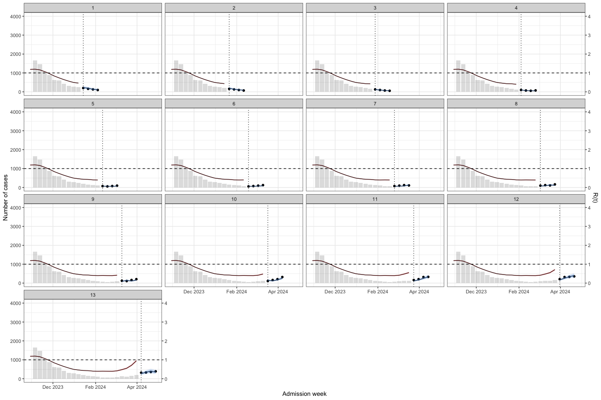
bart_4w_rt_24 |>
plot_bart4w(week_interval = c(14,26))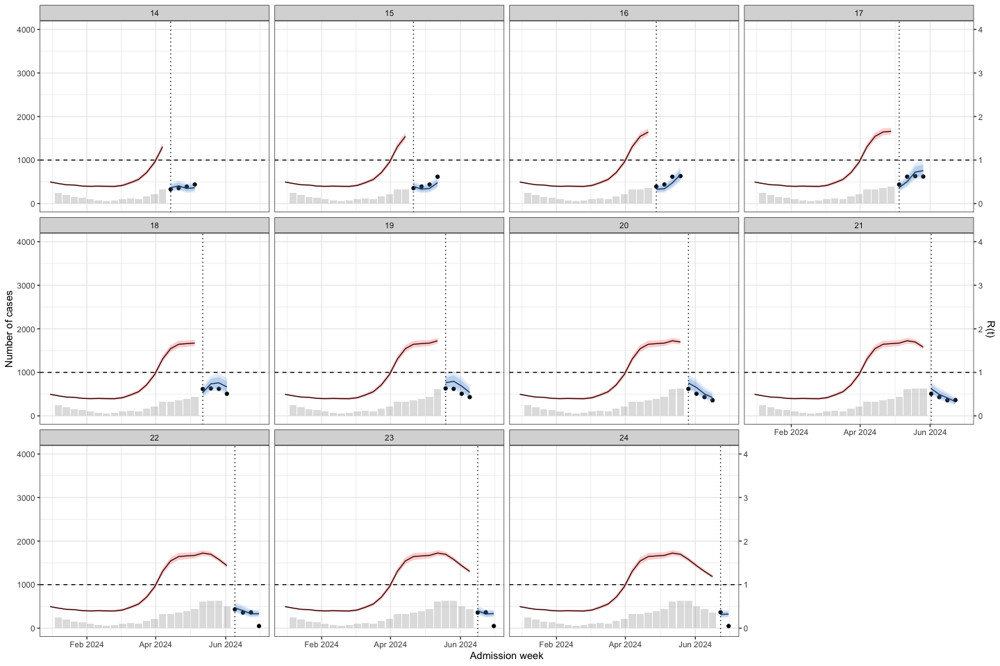
5.8 ARIMA model
ARIMA assume data is stationary. A time series is considered stationary if its statistical properties, such as mean and variance, remain constant over time.
I used adf and kpss test for stationary testing of hfmd time-series data. For ARIMA model, I used data from 2012-2022 for training.
train_data <- hfmd_1324 |>
dplyr::filter(year < 2023 | (year == 2023 & week < 1)) |>
data.frame() |>
na.omit()First I used number of admission for stationary testing. There are 2 test for stationary testing
adf test, null hypothesis: The time series has a unit root, meaning it is non-stationary.
kpss test, null hypothesis: The series is stationary
Create a time-series
ts_train <- ts(train_data$n, frequency = 52)adf test
adf.test(ts_train) ## can reject the null hypothesis
Augmented Dickey-Fuller Test
data: ts_train
Dickey-Fuller = -4.5323, Lag order = 8, p-value = 0.01
alternative hypothesis: stationarykpss test
kpss.test(ts_train) ## can reject the null hypothesis
KPSS Test for Level Stationarity
data: ts_train
KPSS Level = 0.63608, Truncation lag parameter = 6, p-value = 0.01936Usually, there should be a contrast between those 2 test for stationary. If a data is stationary when p-value of adf test < 0.05 and kpss test > 0.05. So the results above state the non-stationary, then I applied the box-cox transformation for the time-series data and retest.
ts_train_t <- ts(train_data$y_transformed, frequency = 52)
adf.test(ts_train_t)
Augmented Dickey-Fuller Test
data: ts_train_t
Dickey-Fuller = -4.3552, Lag order = 8, p-value = 0.01
alternative hypothesis: stationarykpss.test(ts_train_t)
KPSS Test for Level Stationarity
data: ts_train_t
KPSS Level = 0.30149, Truncation lag parameter = 6, p-value = 0.1So I used the box-cox transformation for model
# year_week_grid <- expand.grid(y = 2023, w = 1:52, week_ahead = 4)
#
# # Explicit cluster setup
# cl <- makeCluster(cores)
#
# # Export everything the workers need
# clusterExport(cl, varlist = c("run_arima_week", "hfmd_1324",
# "lambda", "year_week_grid"))
#
# # Load packages on each worker
# clusterEvalQ(cl, {
# library(forecast)
# library(dplyr)
# library(EpiEstim)
# library(janitor)
# })
#
# # Run
# sarima_results_list <- parLapply(
# cl = cl,
# X = 1:nrow(year_week_grid),
# fun = function(i) {
# tryCatch(
# run_arima_week(
# w = year_week_grid$w[i],
# y = year_week_grid$y[i],
# hfmd_data = hfmd_1324,
# lambda = lambda,
# week_ahead = year_week_grid$week_ahead[i]
# ),
# error = function(e) return(NULL)
# )
# }
# )
#
# # Always stop cluster when done
# stopCluster(cl)
#
# save(sarima_results_list,file = "./data/results_arima_23.RData")
load("./data/results_arima_23.RData")Prediction for 2023
sarima_results_list|>
plot_bart4w(week_interval = c(1,13))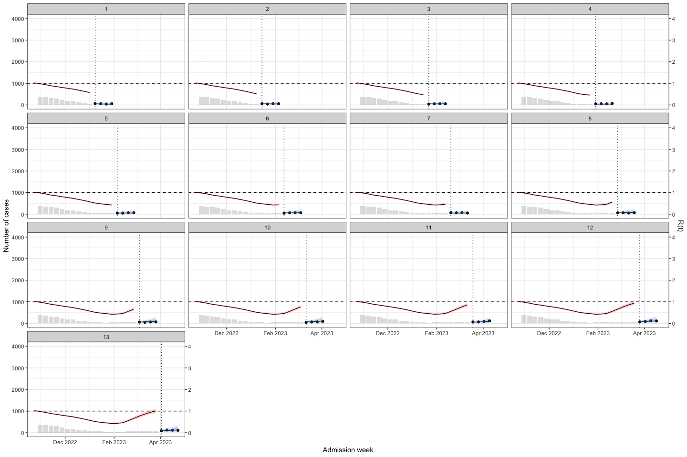
sarima_results_list|>
plot_bart4w(week_interval = c(13,26))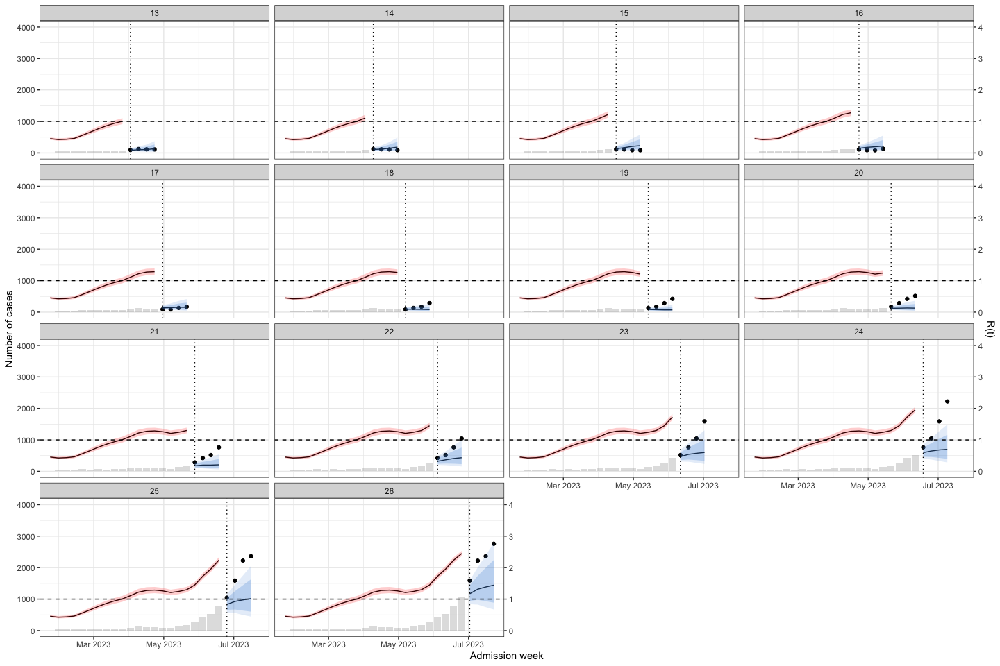
sarima_results_list|>
plot_bart4w(week_interval = c(27,40))
sarima_results_list|>
plot_bart4w(week_interval = c(41,52))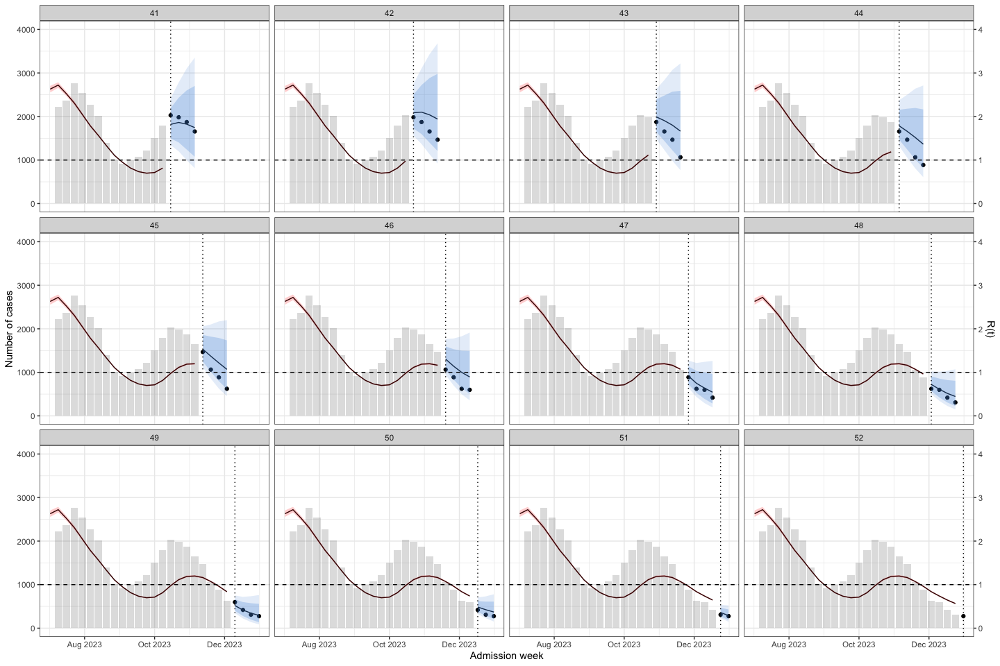
Note
The interesting here is at the second wave, the model predict the outbreak was continuous declining. Until week 40, when we at the first half of the 2nd waves the prediction was good again.
5.9 Performance comparison
Here I compare the model performance when predicting 2023 outbreak.
pred_bart <- bart_4w_rt |> lapply(\(x) x$future) |> bind_rows()
pred_sarima <- sarima_results_list |> lapply(\(x) x$future) |> bind_rows()
per_2models_23 <- bind_rows(pred_bart, pred_sarima, .id = "model") |>
mutate(
model = case_when(model == 1 ~ "bart", .default = "sarima"),
cover = case_when(n <= y_upper95 &
n >= y_lower95 ~ T, .default = F)
) |>
group_by(model, week_run) |>
summarise(
rmse = sqrt(mean((n - pred_t)^2, na.rm = TRUE)),
mae = mean(abs(n - pred_t), na.rm = TRUE),
mape = mean(abs((n - pred_t) / n), na.rm = TRUE) * 100,
picp = mean(cover),
pinaw = mean(y_upper95 - y_lower95) / (max(n) - min(n)),
penalty = ifelse(picp < .95, exp(-1 * (picp - .95)), 1),
cwc = pinaw * penalty,
.groups = "drop"
) |>
dplyr::select(-c(penalty, picp)) |>
pivot_longer(cols = -c(week_run,model)) per_2models_23 |>
ggplot(aes(
x = week_run,
y = value,
group = model,
color = model
)) +
geom_line() +
facet_wrap( ~ factor(name, levels = c("rmse", "mae", "mape", "cwc", "pinaw")), scale = "free_y") +
theme_bw() +
labs(x = "Week forecasting") +
theme(legend.position = "bottom")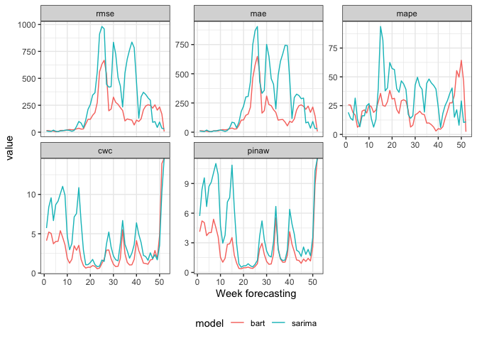
per_2models_23 |>
ggplot(aes(x = model, y = value, fill = model)) +
geom_boxplot() +
facet_wrap( ~ factor(name, levels = c("rmse", "mae", "mape", "cwc", "pinaw")), scale = "free_y") +
theme_bw() +
labs(x = "Model") +
theme(legend.position = "bottom")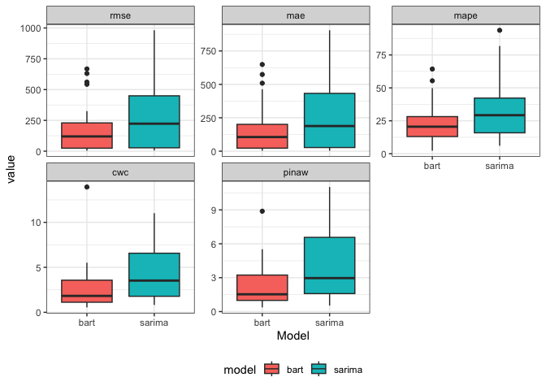